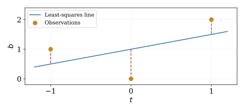

Inner Product Spaces
Anton, Rorres, & Kaul Ch. 6
October 7, 2026
Orthogonal directions separate what we can fit from what remains
\(\vct{b}=\widehat{\vct{b}}+\vct{r},\qquad\widehat{\vct{b}}\perp\vct{r}\)
Coordinates describe a vector; an inner product adds geometry
Choose the inner product to match what size and similarity mean in the problem
An inner product on a real vector space \(V\) assigns \(\langle\vct{u},\vct{v}\rangle\in\reals\)
For all vectors and real scalars: \[\begin{align*} \langle\vct{u},\vct{v}\rangle&=\langle\vct{v},\vct{u}\rangle\\ \langle a\vct{u}+b\vct{v},\vct{w}\rangle &=a\langle\vct{u},\vct{w}\rangle+b\langle\vct{v},\vct{w}\rangle\\ \langle\vct{v},\vct{v}\rangle&\ge0,\qquad \langle\vct{v},\vct{v}\rangle=0\iff\vct{v}=\vct{0} \end{align*}\]
Symmetry makes linearity hold in both arguments
\[\begin{gather*} \langle\vct{u},\vct{v}\rangle_{\mat{W}}=\vct{u}^{\mathsf T}\mat{W}\vct{v},\qquad \mat{W}=\mat{W}^{\mathsf T}\text{ positive definite}\\ \mat{W}=\begin{pmatrix}1&0\\0&4\end{pmatrix},\qquad \left\|\begin{pmatrix}x_1\\x_2\end{pmatrix}\right\|_{\mat{W}}^2=x_1^2+4x_2^2 \end{gather*}\]
The weighted unit circle is an ellipse in standard coordinates
For \(\vct{u}=(1,1)^{\mathsf T}\) and \(\vct{v}=(4,-1)^{\mathsf T}\): \(\langle\vct{u},\vct{v}\rangle_{\mat{W}}=0\) but \(\vct{u}^{\mathsf T}\vct{v}=3\)
On \(C([0,1])\), define \[\begin{equation*} \langle f,g\rangle=\int_0^1 f(t)g(t)\,\dif t \end{equation*}\]
For \(f(t)=1\), \(g(t)=t\): \(\langle f,g\rangle=1/2\)
\[\begin{gather*} \|\vct{v}\|=\sqrt{\langle\vct{v},\vct{v}\rangle},\qquad d(\vct{u},\vct{v})=\|\vct{u}-\vct{v}\|\\ \cos\theta=\frac{\langle\vct{u},\vct{v}\rangle}{\|\vct{u}\|\|\vct{v}\|}, \quad\vct{u},\vct{v}\ne\vct{0} \end{gather*}\]
Cauchy–Schwarz: \(|\langle\vct{u},\vct{v}\rangle|\le\|\vct{u}\|\|\vct{v}\|\)
Triangle inequality: \(\|\vct{u}+\vct{v}\|\le\|\vct{u}\|+\|\vct{v}\|\)
\(\exstar\) On \(\reals^2\), which formulas are inner products?
\(u_1v_1+2u_2v_2\), \(\quad u_1v_1-u_2v_2\), \(\quad u_1v_1\)
Name the failed axiom for each rejected formula
\(\vct{u}\perp\vct{v}\) means \(\langle\vct{u},\vct{v}\rangle=0\) \[\begin{equation*} \|\vct{u}+\vct{v}\|^2=\|\vct{u}\|^2+\|\vct{v}\|^2 \end{equation*}\]
Nonzero pairwise orthogonal vectors are linearly independent
An orthonormal list is pairwise orthogonal with each vector of norm one
For \(\vct{u}\ne\vct{0}\): \[\begin{gather*} \vct{p}=\frac{\langle\vct{u},\vct{v}\rangle}{\langle\vct{u},\vct{u}\rangle}\vct{u},\qquad \vct{r}=\vct{v}-\vct{p}\\ \vct{p}\in\operatorname{span}\{\vct{u}\},\qquad \vct{r}\perp\vct{u} \end{gather*}\]
For every \(\vct{w}\) on that line: \[\begin{equation*} \|\vct{v}-\vct{w}\|^2=\|\vct{r}\|^2+\|\vct{p}-\vct{w}\|^2 \end{equation*}\]
\(\vct{p}\) is the unique closest vector on the line
Let \((\vct{q}_1,\ldots,\vct{q}_k)\) be an orthonormal basis of a subspace \(S\) \[\begin{gather*} \operatorname{proj}_S\vct{v}=\sum_{j=1}^k\langle\vct{q}_j,\vct{v}\rangle\vct{q}_j\\ \vct{v}=\vct{p}+\vct{r},\qquad \vct{p}\in S,\quad \vct{r}\in S^\perp \end{gather*}\]
Here \(S^\perp=\{\vct{r}:\langle\vct{r},\vct{s}\rangle=0\text{ for every }\vct{s}\in S\}\)
Orthogonal coordinates require inner products instead of solving a new system
In standard Euclidean coordinates, let \(\mat{Q}\) have orthonormal columns spanning \(S\) \[\begin{gather*} \mat{P}=\mat{Q}\mat{Q}^{\mathsf T},\qquad \mat{P}^{\mathsf T}=\mat{P},\quad\mat{P}^2=\mat{P}\\ \mat{P}\vct{v}\in S,\qquad (\mat{I}-\mat{P})\vct{v}\in S^\perp \end{gather*}\]
Idempotence alone characterizes a projection; symmetry additionally makes it orthogonal
\(\exstar\) Let \(S=\operatorname{span}\{(1,1,0)^{\mathsf T},(0,0,1)^{\mathsf T}\}\)
Choose an orthonormal basis and project \((3,1,2)^{\mathsf T}\) onto \(S\)
Find the distance to \(S\)
Start with independent \(\vct{A}_1,\ldots,\vct{A}_n\) \[\begin{align*} \vct{w}_1&=\vct{A}_1,\qquad\vct{q}_1=\vct{w}_1/\|\vct{w}_1\|\\ \vct{w}_j&=\vct{A}_j-\sum_{i=1}^{j-1}\langle\vct{q}_i,\vct{A}_j\rangle\vct{q}_i\\ \vct{q}_j&=\vct{w}_j/\|\vct{w}_j\| \end{align*}\]
At each step, remove directions already represented, then normalize
\(\operatorname{span}\{\vct{q}_1,\ldots,\vct{q}_j\}=\operatorname{span}\{\vct{A}_1,\ldots,\vct{A}_j\}\)
In \(\reals^3\), take \(\vct{A}_1=(1,1,0)^{\mathsf T}\) and \(\vct{A}_2=(1,0,1)^{\mathsf T}\) \[\begin{align*} \vct{q}_1&=\frac1{\sqrt2}(1,1,0)^{\mathsf T}\\ \langle\vct{q}_1,\vct{A}_2\rangle&=1/\sqrt2\\ \vct{w}_2&=(1/2,-1/2,1)^{\mathsf T}\\ \vct{q}_2&=\frac1{\sqrt6}(1,-1,2)^{\mathsf T} \end{align*}\]
Check \(\vct{q}_1^{\mathsf T}\vct{q}_2=0\) and both squared norms equal one
For a real \(m\times n\) matrix with independent columns, \(m\ge n\): \[\begin{gather*} \mat{A}=\mat{Q}\mat{R}_Q,\qquad \mat{Q}^{\mathsf T}\mat{Q}=\mat{I}_n\\ \mat{Q}=[\vct{q}_1\ \cdots\ \vct{q}_n],\qquad (\mat{R}_Q)_{ij}=\begin{cases}\vct{q}_i^{\mathsf T}\vct{A}_j,&i\le j\\0,&i>j\end{cases} \end{gather*}\]
\(\mat{Q}\): \(m\times n\) orthonormal directions
\(\mat{R}_Q\): \(n\times n\) upper triangular coordinates, positive diagonal with this construction
\[\begin{gather*} \mat{A}=\begin{pmatrix}1&1\\1&0\\0&1\end{pmatrix},\qquad \mat{Q}=\begin{pmatrix} 1/\sqrt2&1/\sqrt6\\1/\sqrt2&-1/\sqrt6\\0&2/\sqrt6 \end{pmatrix}\\ \mat{R}_Q=\begin{pmatrix}\sqrt2&1/\sqrt2\\0&\sqrt{3/2}\end{pmatrix} \end{gather*}\]
Column 1 uses only \(\vct{q}_1\); column 2 uses \(\vct{q}_1\) and \(\vct{q}_2\)
Verify \(\mat{Q}\mat{R}_Q=\mat{A}\)
Recall Householder reflections
Gram–Schmidt explains QR; numerical algorithms must also control round-off error
\(\exstar\) Apply Gram–Schmidt to \((1,0,1)^{\mathsf T}\) and \((1,1,0)^{\mathsf T}\)
Write the reduced QR factorization
Why is \(\mat{Q}\mat{Q}^{\mathsf T}\) not \(\mat{I}_3\)?
For \(\mat{A}\vct{x}\approx\vct{b}\), minimize \(\|\mat{A}\vct{x}-\vct{b}\|^2\)
The best fitted vector lies in \(\operatorname{col}(\mat{A})\) and leaves an orthogonal residual \[\begin{gather*} \mat{A}^{\mathsf T}(\vct{b}-\mat{A}\widehat{\vct{x}})=\vct{0}\\ \mat{A}^{\mathsf T}\mat{A}\widehat{\vct{x}}=\mat{A}^{\mathsf T}\vct{b} \end{gather*}\]
These are the normal equations
The fitted vector is unique; coefficients are unique exactly when columns are independent
With reduced QR and full column rank: \[\begin{gather*} \|\mat{A}\vct{x}-\vct{b}\|^2 =\|\mat{R}_Q\vct{x}-\mat{Q}^{\mathsf T}\vct{b}\|^2 +\|(\mat{I}-\mat{Q}\mat{Q}^{\mathsf T})\vct{b}\|^2\\ \mat{R}_Q\widehat{\vct{x}}=\mat{Q}^{\mathsf T}\vct{b}\\ \widehat{\vct{b}}=\mat{Q}\mat{Q}^{\mathsf T}\vct{b} \end{gather*}\]
Compute coordinates with \(\mat{Q}^{\mathsf T}\), then back substitute
The perpendicular part cannot be fitted by any coefficient vector
Data: \((t,b)=(-1,1),(0,0),(1,2)\)
Model \(b\approx x_1+x_2t\) \[\begin{gather*} \mat{A}=\begin{pmatrix}1&-1\\1&0\\1&1\end{pmatrix},\quad \vct{b}=\begin{pmatrix}1\\0\\2\end{pmatrix},\quad \mat{A}^{\mathsf T}\mat{A}=\begin{pmatrix}3&0\\0&2\end{pmatrix},\quad \mat{A}^{\mathsf T}\vct{b}=\begin{pmatrix}3\\1\end{pmatrix}\\ \widehat{\vct{x}}=\begin{pmatrix}1\\1/2\end{pmatrix},\qquad \widehat b(t)=1+t/2 \end{gather*}\]
The feature columns happen to be orthogonal
For the line fit: \[\begin{gather*} \widehat{\vct{b}}=\begin{pmatrix}1/2\\1\\3/2\end{pmatrix},\quad \vct{r}=\vct{b}-\widehat{\vct{b}}=\begin{pmatrix}1/2\\-1\\1/2\end{pmatrix}\\ \mat{A}^{\mathsf T}\vct{r}=\begin{pmatrix}0\\0\end{pmatrix},\quad \|\vct{r}\|^2=3/2 \end{gather*}\]
The residual sums to zero because the model includes a column of ones
Residuals are also perpendicular to the sampled \(t\) values

Least squares minimizes the sum of squared vertical errors
Choose features \(\phi_1(t),\ldots,\phi_n(t)\) \[\begin{gather*} \widehat b(t)=\sum_{j=1}^n x_j\phi_j(t),\qquad a_{ij}=\phi_j(t_i) \end{gather*}\]
Linear regression means linear in the unknown coefficients
For independent columns: \[\begin{gather*} \mat{P}=\mat{A}(\mat{A}^{\mathsf T}\mat{A})^{-1}\mat{A}^{\mathsf T} =\mat{Q}\mat{Q}^{\mathsf T}\\ \mat{P}^2=\mat{P},\quad\mat{P}^{\mathsf T}=\mat{P},\qquad \widehat{\vct{b}}=\mat{P}\vct{b},\quad\vct{r}=(\mat{I}-\mat{P})\vct{b} \end{gather*}\]
\(\mat{P}\) preserves the column space; \(\mat{I}-\mat{P}\) preserves its orthogonal complement
The inverse formula describes the geometry; QR computes the fit without explicitly forming that inverse
Positive observation weights \(w_i\) give \[\begin{gather*} \min_{\vct{x}}\sum_iw_i((\mat{A}\vct{x})_i-b_i)^2 =\min_{\vct{x}}\|\mat{W}^{1/2}(\mat{A}\vct{x}-\vct{b})\|^2\\ \mat{A}^{\mathsf T}\mat{W}(\mat{A}\widehat{\vct{x}}-\vct{b})=\vct{0} \end{gather*}\]
Apply QR to the weighted design matrix when it has full column rank
Dependent or nearly dependent features motivate SVD and regularization
\(\exstar\) Fit \(b\approx x_1+x_2t\) to \((-1,0),(0,1),(1,1)\)
Find coefficients, fitted values, and residuals
Check both normal equations
Choose an orthonormal list \(q_1,\ldots,q_n\) using the integral inner product \[\begin{gather*} p_n=\sum_{j=1}^n\langle q_j,f\rangle q_j\\ \|f-p_n\|^2=\|f\|^2-\sum_{j=1}^n|\langle q_j,f\rangle|^2 \end{gather*}\]
\(p_n\) is the unique best approximation in their span
This is the same projection geometry used in regression
On \([0,1]\), begin with \(1\) and \(t\) \[\begin{gather*} q_1(t)=1,\qquad w_2(t)=t-\int_0^1t\,\dif t=t-1/2\\ \int_0^1(t-1/2)^2\,\dif t=1/12,\qquad q_2(t)=\sqrt{12}(t-1/2) \end{gather*}\]
Gram–Schmidt works on functions as well as coordinate vectors
For \(f(t)=t^2\) on \([0,1]\): \[\begin{gather*} \langle q_1,f\rangle=1/3,\qquad \langle q_2,f\rangle=\sqrt{12}/12\\ p(t)=\frac13+\frac{\sqrt{12}}{12}\sqrt{12}(t-1/2)=t-1/6\\ \|f-p\|^2=\frac15-\frac19-\frac1{12}=\frac1{180} \end{gather*}\]
Continuous least squares minimizes an integral of squared error
It need not interpolate either endpoint
On \([0,1]\), use \(1\) and, for \(k\ge1\): \[\begin{equation*} \sqrt2\cos(2\pi kt),\qquad \sqrt2\sin(2\pi kt) \end{equation*}\]
These functions are orthonormal under \(\int_0^1 f(t)g(t)\,\dif t\)
Finite sums approximate a function by its periodic components
The constant coefficient is the mean \(\int_0^1f(t)\,\dif t\)
On \(\mathbb{C}^n\), adopt \(\langle\vct{u},\vct{v}\rangle=\vct{u}^*\vct{v}\)
Conjugate linear in the first argument, linear in the second \[\begin{gather*} \langle\vct{u},\vct{v}\rangle=\overline{\langle\vct{v},\vct{u}\rangle},\qquad \|\vct{v}\|^2=\sum_j|v_j|^2\\ \langle f,g\rangle=\int_0^1\overline{f(t)}g(t)\,\dif t \end{gather*}\]
Ordinary real-angle formulas do not directly define a complex angle
For integers \(k\), let \(q_k(t)=e^{2\pi\sqrt{-1}\,kt}\) \[\begin{gather*} \langle q_k,q_\ell\rangle =\int_0^1e^{2\pi\sqrt{-1}(\ell-k)t}\,\dif t =\begin{cases}1,&k=\ell\\0,&k\ne\ell\end{cases}\\ c_k=\langle q_k,f\rangle =\int_0^1e^{-2\pi\sqrt{-1}\,kt}f(t)\,\dif t \end{gather*}\]
For real \(f\), \(c_{-k}=\overline{c_k}\)
Fourier matrices and FFT turn sampled versions into fast coordinate calculations
An algebraic basis represents each vector with a finite linear combination
A complete orthonormal Fourier system represents square-integrable functions by limits in the \(L^2\) norm \[\begin{equation*} \left\|f-\sum_{k=-N}^{N}c_kq_k\right\|_{L^2}\longrightarrow0 \end{equation*}\]
Convergence in mean square does not automatically imply convergence at every point
\(\exstar\) For \(f(t)=2+3\cos(2\pi t)-\sin(4\pi t)\), find its mean
Find its coefficients in the normalized real Fourier system
Which complex frequencies can have nonzero coefficients?
From exact solutions to orthogonal decompositions and best fits
For real \(\mat{A}\) with full column rank: least squares solves \(\mat{R}_Q\widehat{\vct{x}}=\mat{Q}^{\mathsf T}\vct{b}\); the residual satisfies \(\mat{A}^{\mathsf T}(\vct{b}-\mat{A}\widehat{\vct{x}})=\vct{0}\)
Choose later topics according to class preferences and remaining time
© 2026 Fred J. Hickernell · Illinois Tech · assisted by ChatGPT and Codex · Inner Products · MATH 332 — Fall 2026 Website · \(\exstar\) = exercise